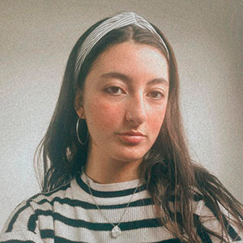

Mi nombre es Delfina y soy estudiante avanzada de la carrera de Diseño y Comunicación Visual en la Universidad Nacional de Lanús, BS.AS., y como la ansiedad de gana me encuentro trabajando como diseñadora gráfica junior de manera freelance desde hace 2 años. A los 5 años fui a mi primer taller de dibujo y pintura, cosas que sigo haciendo hasta el día de hoy y que incorporo a mis trabajos de manera digital. No creo estar equivocada en decir que esa fue la raíz de mi amor por el diseño.